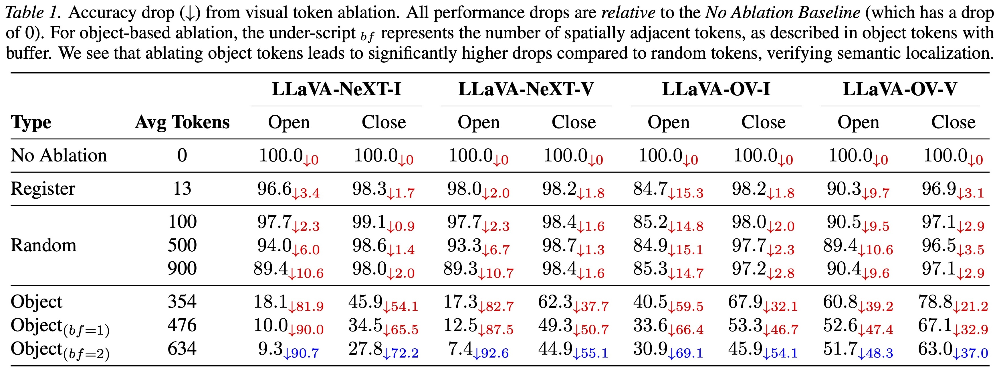
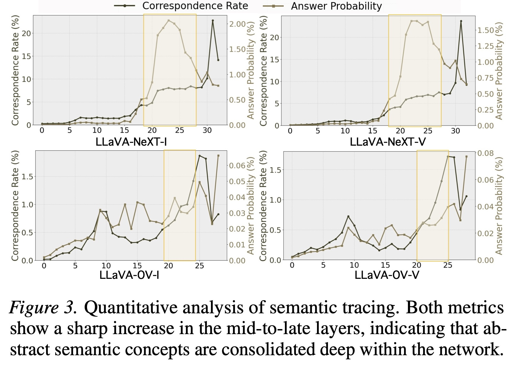
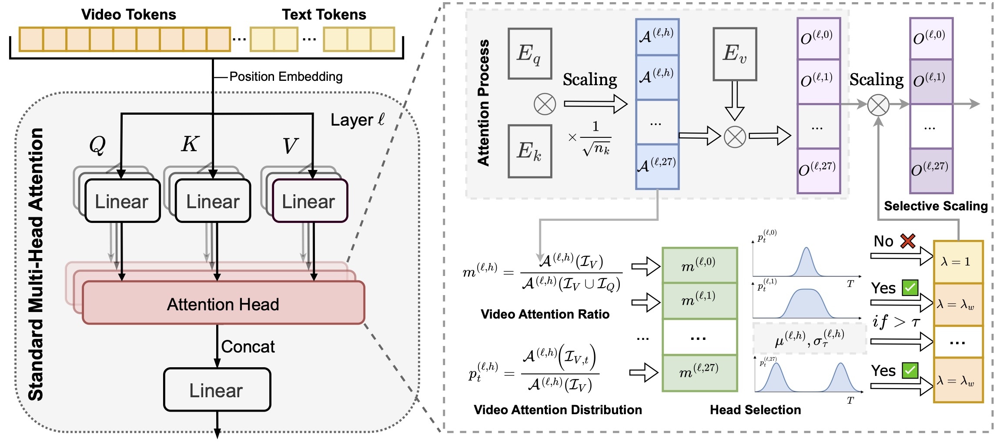

Autoregressive large vision–language models (LVLMs) interface video and language by projecting video features into the LLM's embedding space. However, it remains unclear where temporal evidence is represented and how it causally influences decoding.
To address this gap, we present CircuitProbe, a circuit-level analysis framework that dissects the end-to-end video-language pathway through two stages:
Based on the analysis, we design a targeted Surgical Intervention: identifying temporally specialized attention heads and selectively amplifying them within the critical layer interval. This yields consistent improvements (up to 2.4% absolute) on the temporal-heavy TempCompass benchmark without retraining.
Exploring Circuit 1 (Visual Auditing) and Circuit 2 (Semantic Tracing)

Finding: Visual semantics are strongly localized to object-aligned tokens.
Ablating object tokens causes a massive performance drop (e.g., -92.6%), whereas ablating an equal number of random or register tokens has minimal impact. This confirms that critical information is spatially sparse.

Finding: The "Consolidation Interval".
We find a sharp phase transition in mid-to-late layers. Before this interval, visual features are processed but not readable by the language head. This defines the critical window for our surgical intervention.

Our framework consists of two analytic probes and one surgical intervention. Visual Auditing (left) identifies task-critical tokens via causal ablation. Semantic Tracing (right) tracks when these tokens become language-aligned.
We model the attention head selection using a routing score $m^{(l,h)}$ and temporal dispersion metrics. Only heads that satisfy the criteria are amplified during the critical consolidation interval.
By amplifying the identified Temporal Attention Heads only within the consolidation interval, we can correct temporal hallucinations and ordering errors.
@article{circuitprobe2025,
title={CIRCUITPROBE: Tracing Visual Temporal Evidence Flow in Video Language Models},
author={Yiming Zhang, Zhuokai Zhao, Chengzhang Yu, Zhendong Chu, Kun Wang , Qiankun Li , Zihan Chen , Yang Liu , Zenghui Ding , Yining Sun, Qingsong Wen},
journal={Arxiv},
year={2025}
}